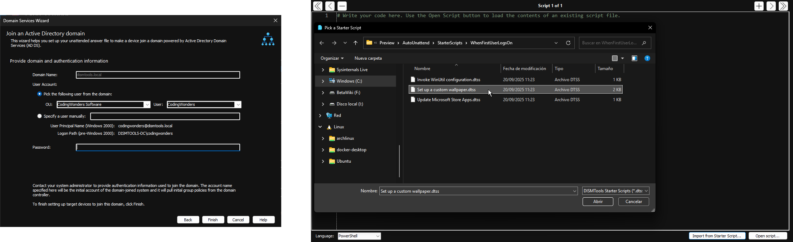
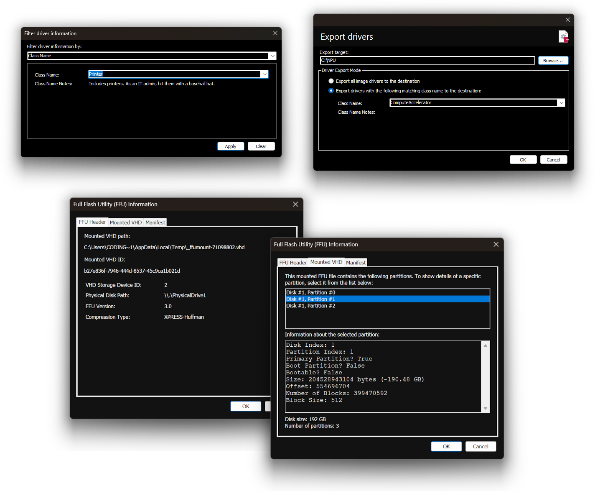

Release highlights
This new version of DISMTools comes with new features that enhance image management and servicing tasks. Here are some of its key changes.
If you want to take a look at everything that has changed though, check out the release notes page for more information.
Support for more PXE providers
DISMTools 0.7.1 adds official support for FOG (in both a Windows environment and a UNIX environment), increasing the number of supported PXE providers to 2. Several improvements have also been made to the PXE Helper framework to support adding network drivers to the Preinstallation Environment, IPv6, and more.

Prepare reference computers for image capture more easily
If you're preparing a Windows image using a reference computer by pre-installing applications, generalizing that system has become easier with the new Sysprep Preparation Tool. Simply follow the steps in the wizard and you'll be ready to capture your image in no time.

Learn more about the Sysprep Preparation Tool
Get to PE Helper tasks and components more easily
DISMTools 0.7.1 introduces a new Autorun application that lets you launch HotInstall, to begin installation of operating systems, reboot to installation media, start PXE Helper server components, and launch the Sysprep Preparation Tool; all from a single interface.

Improved Active Directory domain join integration and unattended answer file features
The unattended answer file creation wizard, when creating answer files that join devices to a domain, can now let you specify an initial user account to join the domain with much more easily, thanks to a new picker for OUs and users. DNS Address syntax validation has also been improved to work seamlessly with scoped IPv6 addresses. DISMTools will also warn you when a selected account in the domain is disabled.
For those getting started with unattended installations, we now provide a set of starter scripts that will help you tweak target installations more easily. Set a wallpaper that you like? Check. Configure OEM information and Quick Machine Recovery settings? Check. Call WinUtil with your configuration file? Check. Use these scripts as a base for your own customizations, regardless of the image you're working with.
When it comes to post-installation scripts, we have also improved the wizard so that you can now specify multiple scripts in each of the stages (during system configuration, when the first user logs on, or when users log on for the first time).

Manage the services and environment variables of your images
DISMTools 0.7.1 features new tools that let you view and modify system services and environment variables in your Windows images, allowing you to see more information about the images you're working with and tweak them to your liking.

Overall refinements
This release also focuses on refining existing tasks and functionality to improve the user experience. For example, the program is more reliable and components have been updated to their latest versions. A note-worthy change is that DISMTools is more DPI-aware now, so it no longer looks blurry on high-DPI displays.
Thanks to the contributors
The following people have helped shape this version of DISMTools by reporting issues or suggesting new features or changes:
If you want to appear in this list, you can report issues or suggestions in any channel you prefer (via the MDL forum thread, via the GitHub repository, or via any announcements on the DISMTools subreddit or on the Windows, Windows11 and Windows10 subreddits (as comments)) or submit new code changes (read the contribution guidelines for more information).